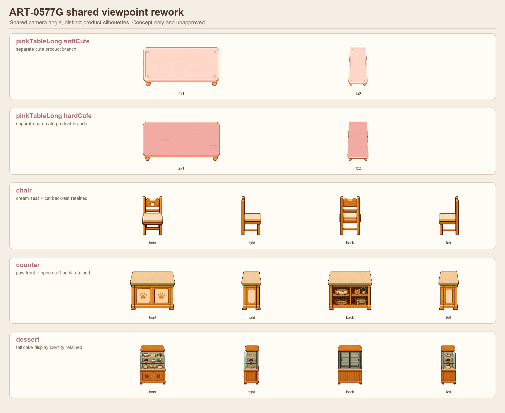
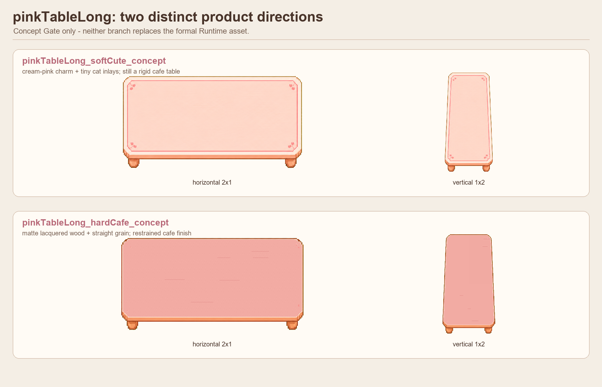
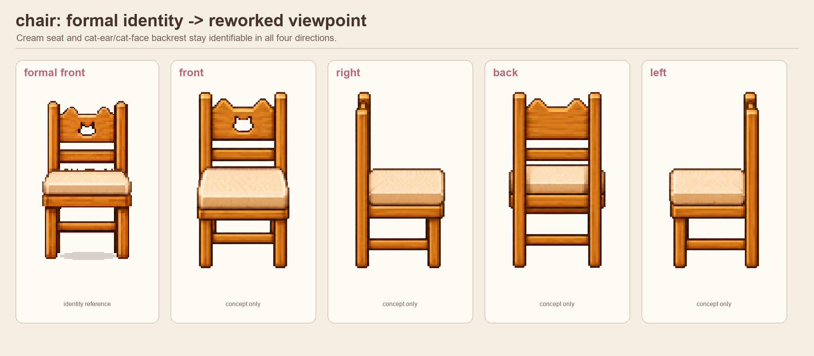
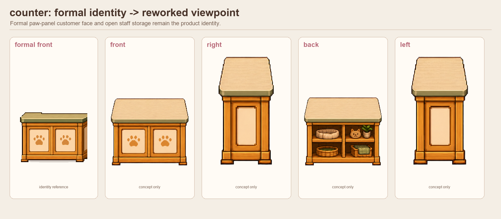
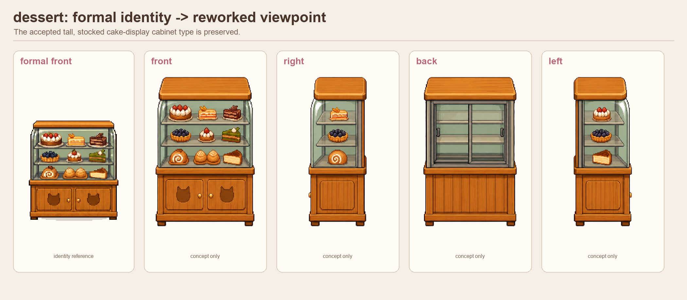
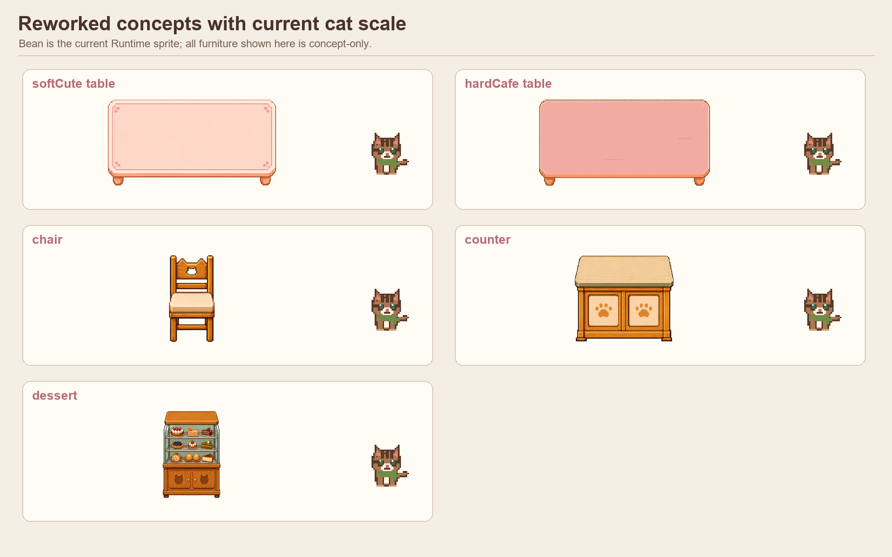
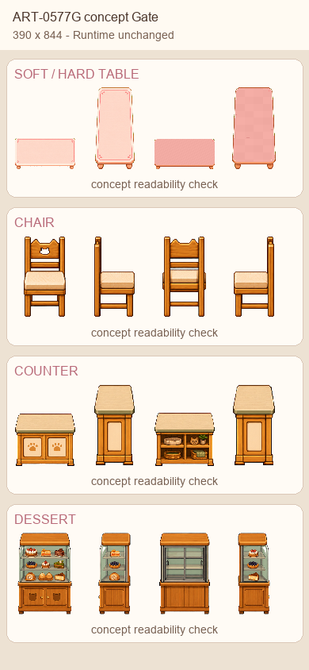
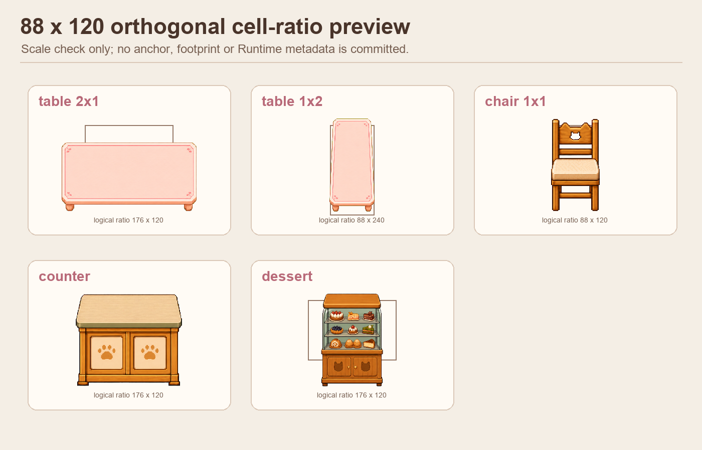

ART-0577G 共用視角產品識別校正
Concept Gate only：Build 0577e、正式 PNG 與 Runtime 均未修改。 共用的是觀看角度，不是共用家具輪廓。








文件： Result · Acceptance
Concept Gate only：Build 0577e、正式 PNG 與 Runtime 均未修改。 共用的是觀看角度，不是共用家具輪廓。








文件： Result · Acceptance